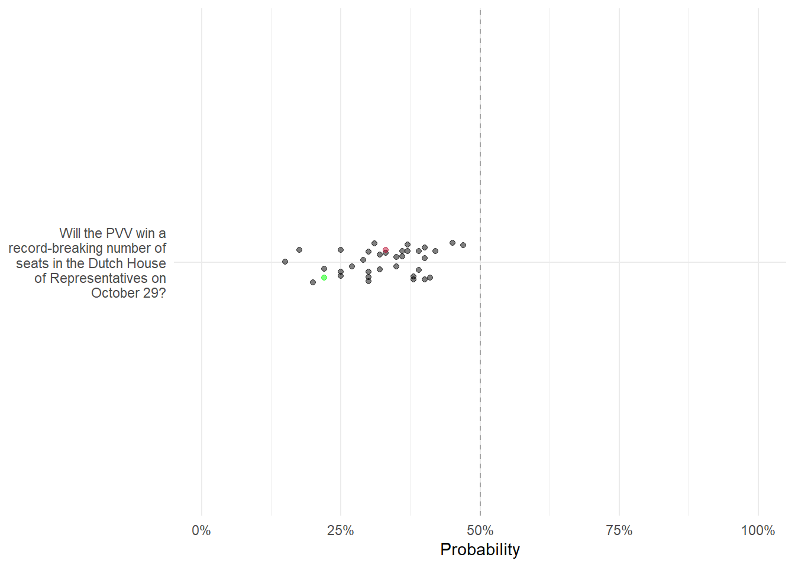
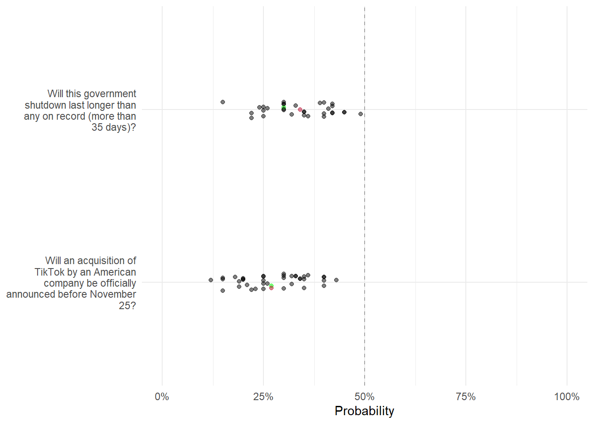

Fall 2025 Predictions
You can find all this semester’s briefings here.
Week 1 (8/19)
Week 2 (8/26)
Week 3 (9/2)
Week 4 (9/9)
Week 5 (9/16)
Week 6 (9/23)
Week 7 (9/30)

Week 8 (10/7)

Week 9 (10/14)
Leaderboard
| Rank | Name | Submissions | Correct Calls | Brier Score |
|---|---|---|---|---|
| 1 | Sierra Cross-Thompson | 10 | 2/4 | 0.1598 |
| 2 | Chris Haswell | 16 | 3/4 | 0.1759 |
| 3 | Caleb Lux | 16 | 3/4 | 0.1829 |
| 4 | Owen Johnston | 15 | 2/4 | 0.1856 |
| 5 | Zafar Ali | 15 | 2/4 | 0.1902 |
| 6 | Akshara Singh | 15 | 3/4 | 0.2019 |
| 7 | Liz Yancey | 15 | 2/4 | 0.2141 |
| 8 | James Hunter Darke | 14 | 3/4 | 0.2156 |
| 9 | Paul Frilingos | 13 | 3/4 | 0.2156 |
| 10 | Ruhi Doddamani | 14 | 2/4 | 0.2156 |
| 11 | Jhaycee Barnes | 16 | 2/4 | 0.2185 |
| 12 | Nic Curtis | 15 | 2/4 | 0.2244 |
| 13 | Cierra Green | 16 | 3/4 | 0.2268 |
| 14 | Jackson Bost | 16 | 3/4 | 0.2280 |
| 15 | Crowd | 17 | 3/4 | 0.2332 |
| 16 | Anna Barton-Caucci | 15 | 3/4 | 0.2334 |
| 17 | Alika Otero-Ricalde | 12 | 2/4 | 0.2394 |
| 18 | Manuv Datta | 13 | 2/4 | 0.2443 |
| 19 | Reese Fabritius | 14 | 3/4 | 0.2469 |
| 20 | Sarah Kate Maher | 16 | 2/4 | 0.2475 |
| 21 | Kristoffer | 1 | 0/4 | 0.2500 |
| 22 | Anna Kneser | 15 | 2/4 | 0.2644 |
| 23 | Raquel Beatriz Caldas Laranjeira | 16 | 2/4 | 0.2657 |
| 24 | Ana Valencia | 14 | 3/4 | 0.2715 |
| 25 | Francesca Mariano | 15 | 2/4 | 0.2718 |
| 26 | Ellie Null | 14 | 2/4 | 0.2753 |
| 27 | Shaheer Ul-Islam | 15 | 2/4 | 0.2788 |
| 28 | Mateo Ceron | 12 | 1/4 | 0.2916 |
| 29 | Alizah Mudaliar | 16 | 1/4 | 0.2964 |
| 30 | Jack Lutz | 14 | 2/4 | 0.2984 |
| 31 | Arshia Charkhian | 12 | 3/4 | 0.2994 |
| 32 | Caroline Mattox | 12 | 2/4 | 0.2997 |
| 33 | Kira Fleischer | 13 | 3/4 | 0.3017 |
| 34 | Breanne Talley | 13 | 1/4 | 0.3037 |
| 35 | Blake Martin | 14 | 1/4 | 0.3042 |
| 36 | Hunter Murray | 13 | 1/4 | 0.3042 |
| 37 | Amanda Neighbour | 16 | 1/4 | 0.3206 |
| 38 | Sade Ezekiel | 16 | 1/4 | 0.3215 |
| 39 | Elizabeth Nelson | 14 | 2/4 | 0.3225 |
| 40 | Joe Ornstein | 16 | 2/4 | 0.3312 |
| 41 | Sasha Mahtani | 14 | 1/4 | 0.3458 |
| 42 | Kristoffer Fields | 12 | 1/4 | 0.3550 |
| 43 | Ryan Marx | 12 | 1/4 | 0.3681 |